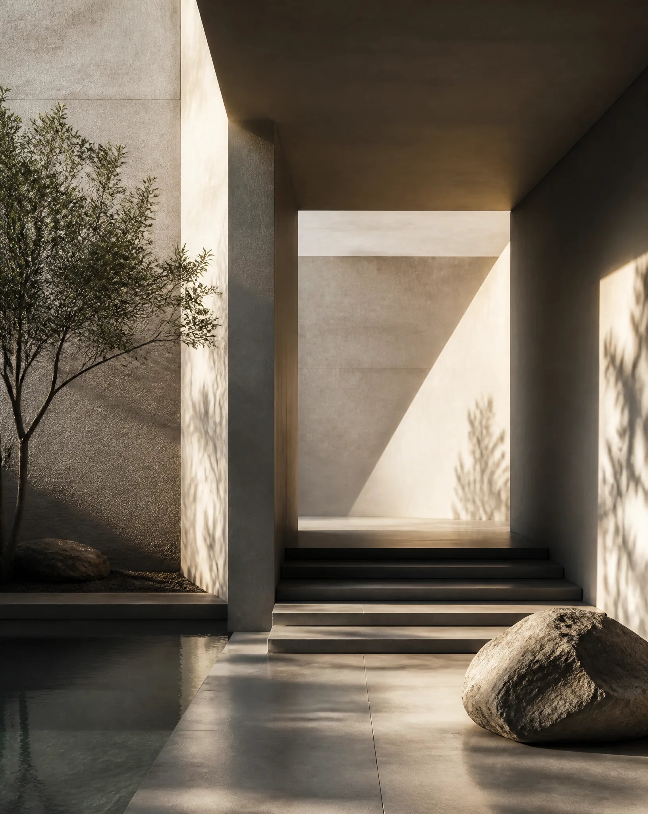
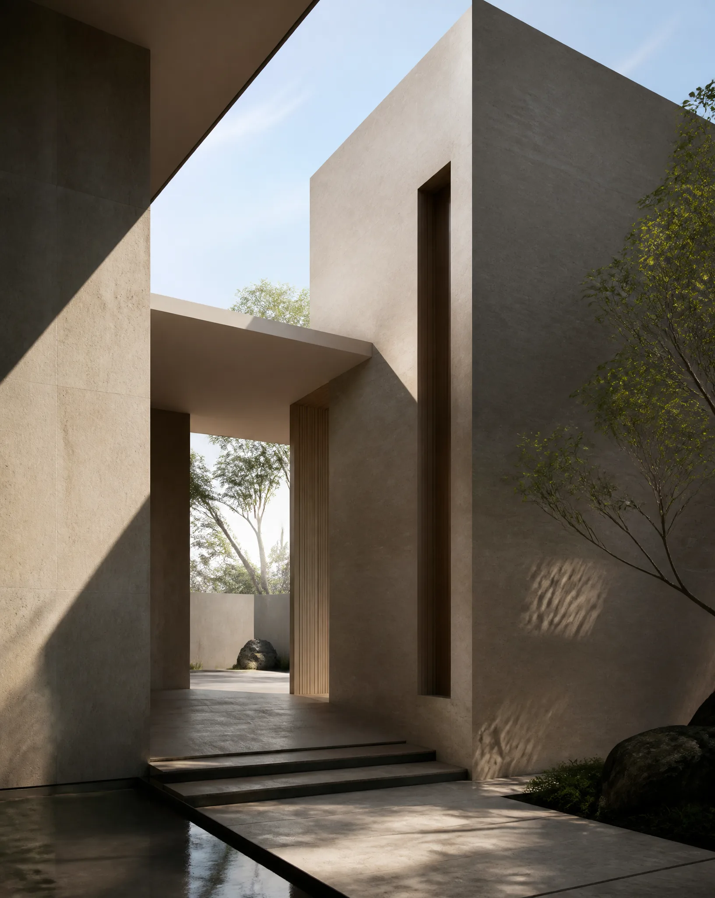
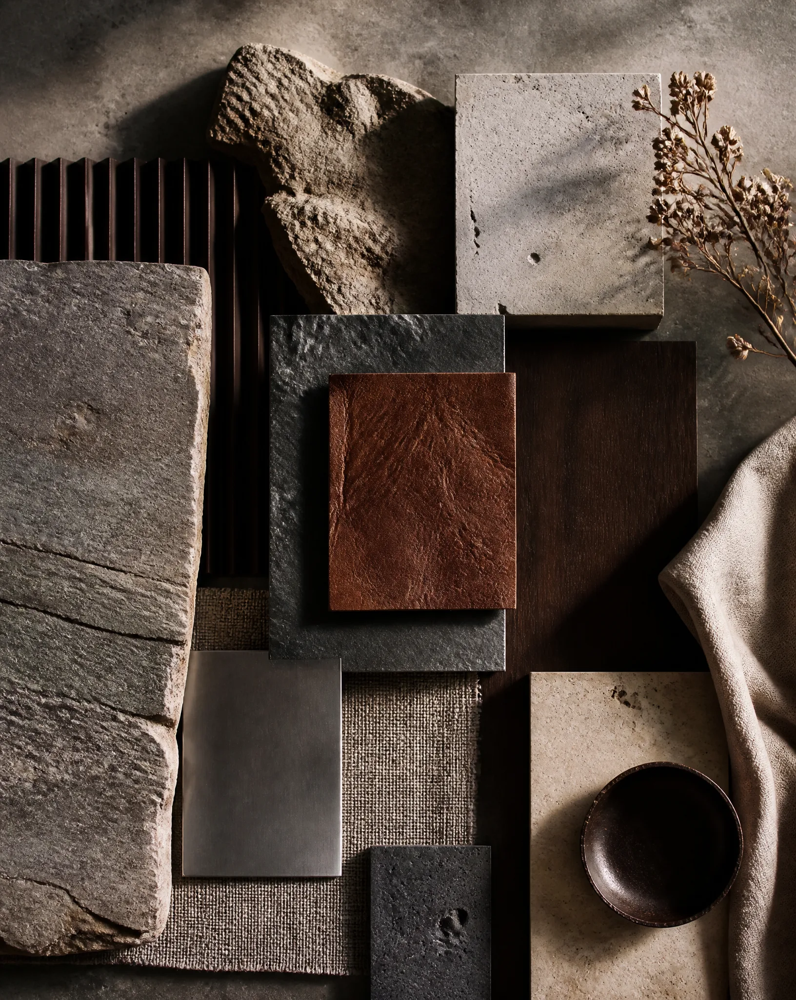
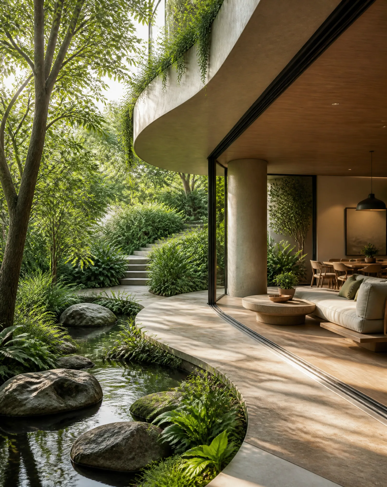
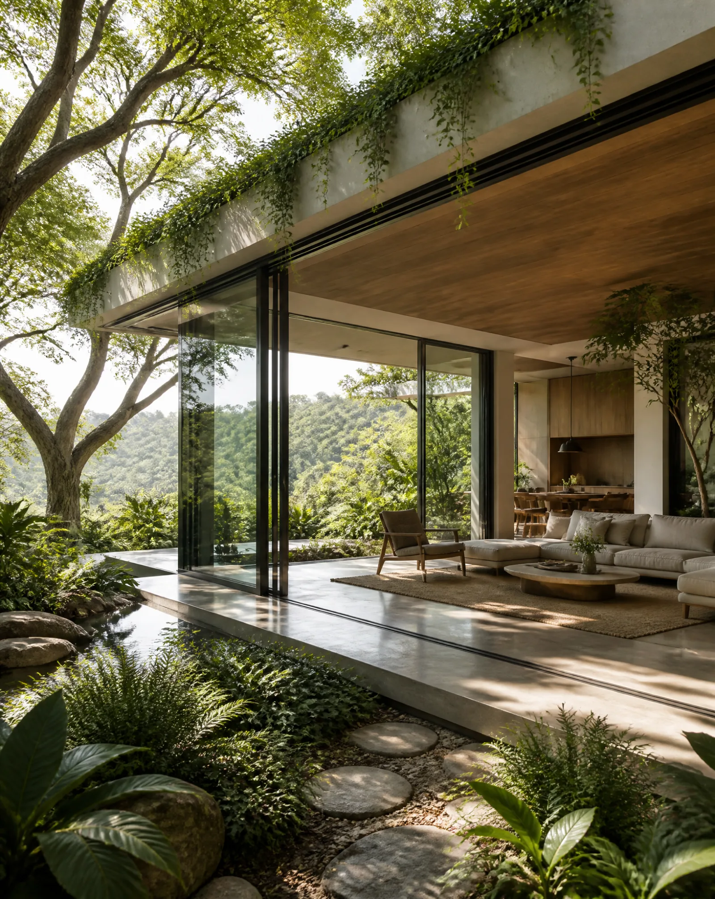

Die feine Balance zwischen brutalistischer Geometrie und organisch fließenden Formen.
Kuratierte Räume, gebaut für tiefe Konzentration, Ruhe und ästhetische Beständigkeit.
Wir begreifen jedes Volumen als Gelegenheit, Licht, Schatten und menschliche Interaktion zu definieren. Materialien wählen wir nicht nach Erscheinung, sondern nach Resonanz.

Das Gewicht roher Materialien verankert die Räume in ihrer natürlichen Umgebung.

Natürliches Licht wird choreografiert und erzeugt über den Tag hinweg wechselnde Atmosphären.
Seltene und elementare Werkstoffe werden zu Texturen verarbeitet, die Berührung verlangen und würdevoll altern — roher Brutalismus, verfeinert.

Oberflächen, die auf Berührung reagieren und mit der Zeit Charakter gewinnen.
Die Schönheit tragender Elemente bleibt sichtbar, ohne oberflächliches Beiwerk.
Gebaute Formen verschmelzen mit der umgebenden Landschaft und lösen die Grenze zwischen innen und außen auf.

Übergänge, durch die die Natur mühelos in den Wohnraum dringt.

Die Architektur nimmt aktiv am lokalen ökologischen Kontext teil und stützt ihn.
Rückblicke auf die Räume, die wir geformt haben.
„Eine vollkommene Verwandlung unseres Raums. Die Sorgfalt für natürliches Licht und rohe Materialien hat einen Ort geschaffen, den wir nie wieder verlassen wollen. Ihre Handschrift ist einzigartig.“
„Elysian Constructs hat unsere Erwartungen übertroffen. Ihr Verständnis von brutalistischer Geometrie im Zusammenspiel mit fließenden organischen Formen ist in der modernen Architektur beispiellos.“
„Die akribische Kuratierung jedes Details in unserem Büro hat die Dynamik im Team vollständig verändert. Eine Meisterklasse in ökologischer Synthese und reiner Zurückhaltung.“
Maßgeschneiderte strukturelle und räumliche Eingriffe.
Erste räumliche Analyse und Materialnarrativ, um die Projektgrenzen zu bestimmen.
Vollständige Bauplanung, Innenraumführung und Ausstattungsspezifikation.
Projektsteuerung von Anfang bis Ende — mit absoluter Treue zur ursprünglichen Entwurfsidee.